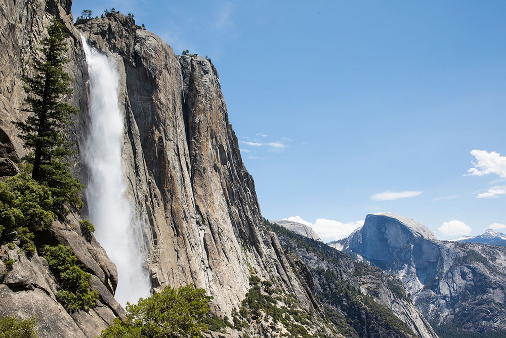
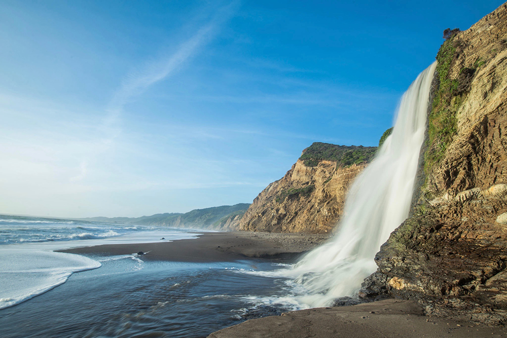
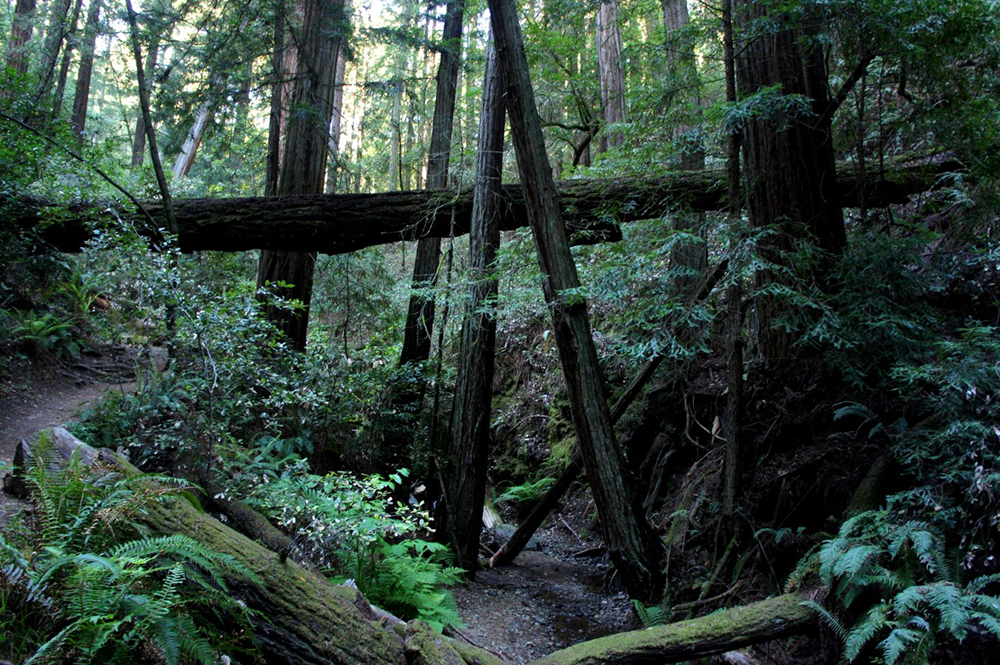
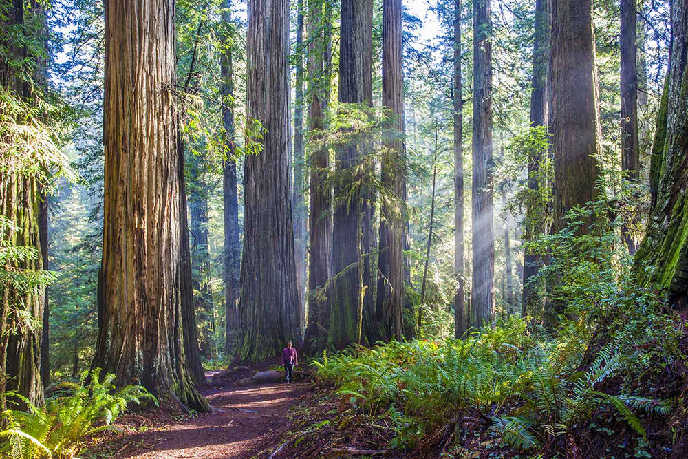
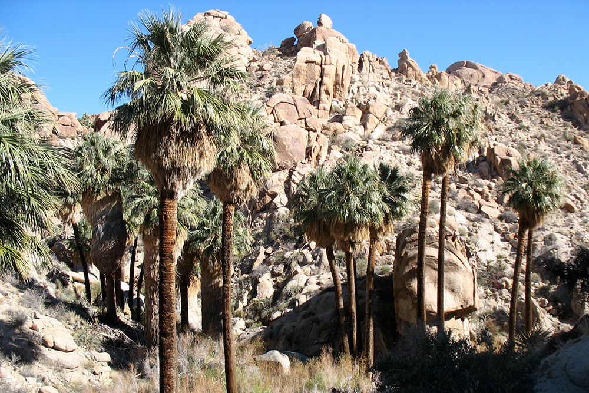
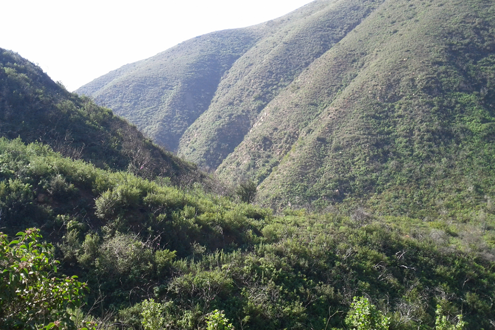
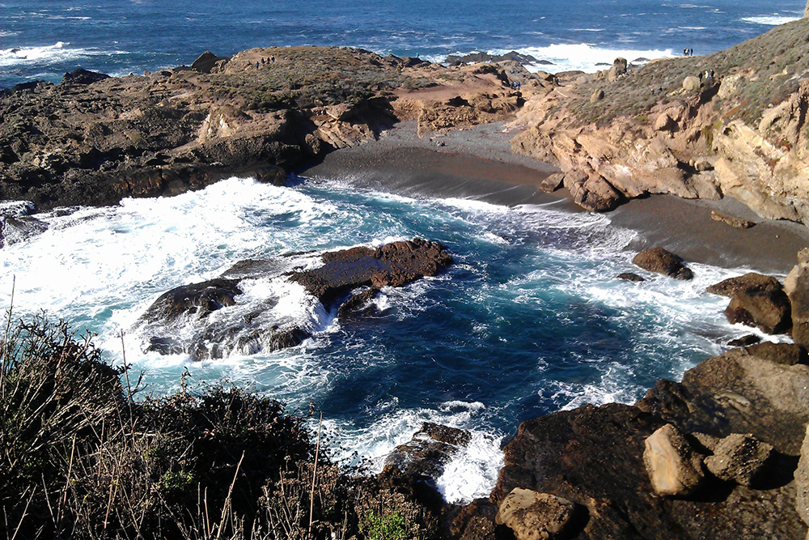
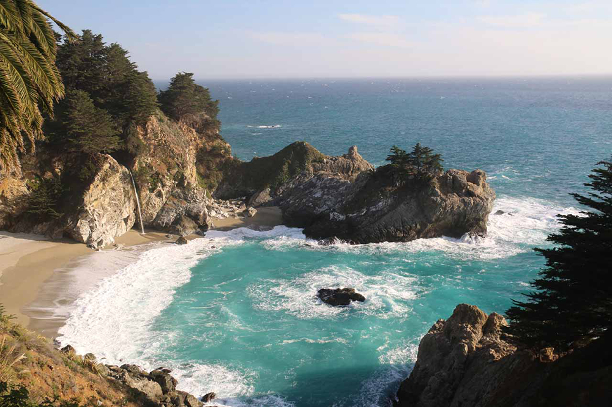

Yosemite Falls Trail, Yosemite National Park

Alamere Falls via Palomarin Trailhead — Point Reyes National Seashore

Dipsea Trail — Marin County

Boy Scout Tree Trail — Redwood National Park

Lost Palms Oasis — Joshua Tree National Park

Solstice Canyon Trail — Santa Monica Mountains National Recreation Area

Sea Lion Point Trail — Point Lobos

McWay Waterfall Trail — Julia Pfeiffer Burns State Park